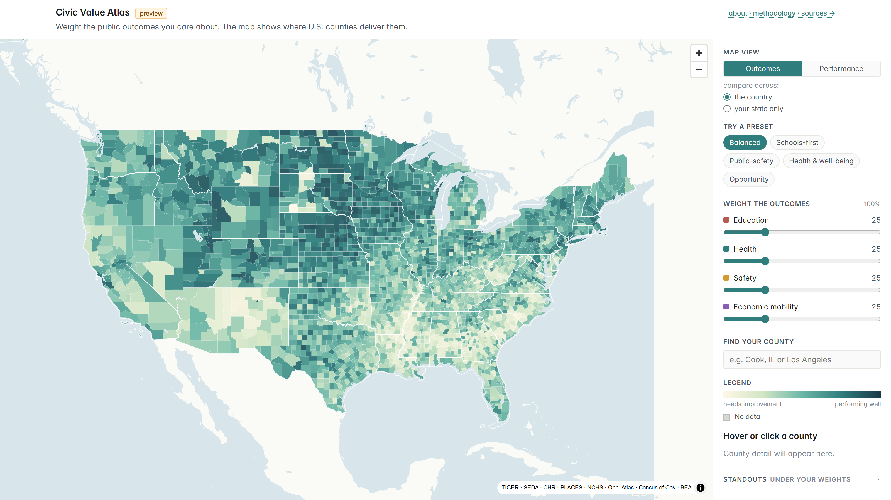

Is your county doing better or worse than you'd expect?
The Civic Value Atlas is a national, county-level map of how every U.S. county is doing on the things people care about — schools, health, public safety, and economic mobility. Move four sliders to weight what matters to you and the map recolors in real time. Then switch from the raw outcomes to performance vs. expectations — which counties beat, or fall short of, what their circumstances and spending would predict. Free, built entirely on public data.

What the map shows
Every county in America spends public money and gets results residents can feel. The Civic Value Atlas puts those side by side and lets you color the map two ways:
- Outcomes — how well a county is doing on the topics you've weighted, from 0 to 100. The straightforward "who's doing well" picture.
- Performance vs. Expectations — whether a county's results beat or fall short of what you'd expect given its circumstances and spending. The counties doing more with what they have, and the ones coming up short.
You decide what "doing well" means. Drag the sliders for education, health, safety, and economic mobility, or start from a preset, and everything — the map, the rankings, the standouts — updates instantly.
How "performance vs. expectations" works
Two counties aren't really comparable if one is a dense, wealthy suburb and the other a small rural county with an older population — they start from very different places. So for each topic we build a model that learns the typical relationship, across all counties, between a county's results and the things it can't change overnight: how much it spends, how many people live there and how densely, how rural it is, its age mix, and its income. The model predicts what a county "should" score. The gap between its actual result and that prediction is what the Performance view colors — above expected in teal, below expected in rust.
It's a description, not a verdict. A county doing better than expected isn't proof its government runs better — it means its results are higher than the model predicted, for reasons the model can't see. Read it as "this place does better than similar places."
Where the data comes from
Every number traces back to a public dataset:
| Topic | Source |
|---|---|
| County geography | U.S. Census TIGER/Line |
| Education | Stanford Education Data Archive (SEDA) |
| Health | County Health Rankings · CDC PLACES |
| Safety | CDC & NCHS (homicide, drug overdose) |
| Economic mobility | Opportunity Atlas (Census Bureau · Opportunity Insights) |
| Local spending | Census of Governments · BEA price adjustment |
Common questions
Does it judge whether a county is well governed?
No. The map describes results, not the quality of government. A county can come out above expected because of a strong local institution, a particular history, or a state program run from the capital — things the model can't see. Read a county's gap as "it's doing better, or worse, than similar places," not as a grade on its leaders.
Does spending drive the results?
Less than you might think. Across counties, how much a place spends explains surprisingly little of the difference in outcomes — a county's circumstances explain far more. That's exactly why the Performance view holds those circumstances steady and looks at what's left over.
Can I compare a county only to others in its state?
Yes. Flip "compare across" to "your state only" and every county is re-ranked against its in-state neighbors — 50 is the state middle, 0 is worst in the state, 100 is best. It's a useful lens because voters can change their own state's laws and school-funding rules, but not their neighbors'.
Is it free?
Yes — free to use, no signup. Every input is public data, and the full methodology, sources, and limits are written out on the how-it-works page.